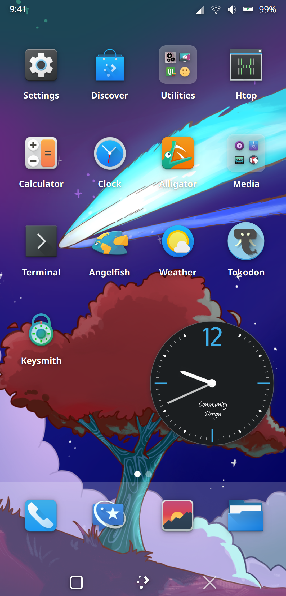

Fedora KDE Plasma Mobile
|
THIS PAGE IS A PLACEHOLDER, SIMPLY LIFTED FROM https://fedoraproject.org/wiki/SIGs/KDE/Mobile AND PLASMA MOBILE BLOG |
Fedora KDE Plasma Mobile is Fedora’s implementation of Plasma Mobile Most of the Plasma Mobile Apps are available in Fedora.

Figure 1. Screenshot of KDE Plasma Mobile (taken from https://plasma-mobile.org/2024/03/01/plasma-6/, replace later please!)
Want to help? Learn how to contribute to Fedora Docs ›